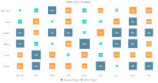
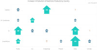
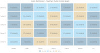
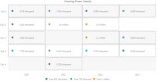
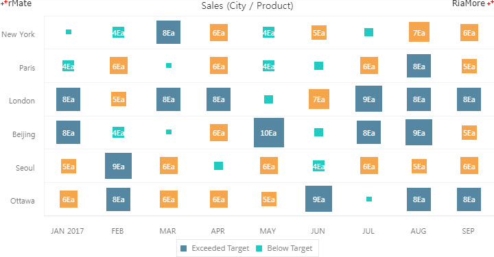
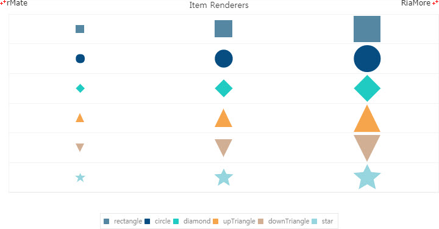
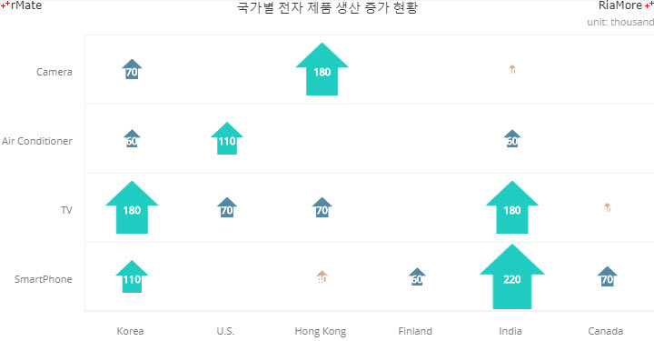
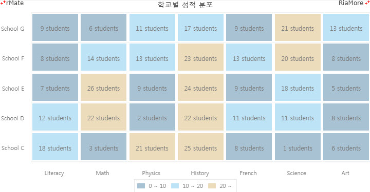
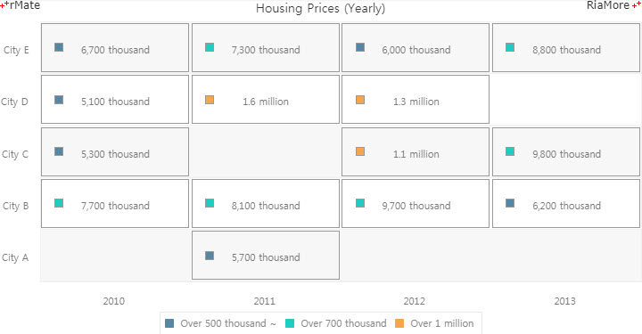

매트릭스 차트
매트릭스 차트는 X, Y 좌표 상에 Z 값을 표현하는 차트입니다.
X, Y 축의 레이블에는 일반적으로 카테고리 명이 표시되며 X, Y 좌표상에 표시되는 Z 값은 매트릭스 차트의 유형에 따라서 도형, 이미지, 사각형 박스, 플롯(plot)이 될 수 있습니다.
매트릭스 차트는 <Matrix2DChart> 노드의 series 속성값에 <Matrix2DSeries> 노드를 설정하여 생성할 수 있습니다.
매트릭스 차트의 유형은 <Matrix2DChart> 노드의 type 속성에 지정된 값에 따라서 결정되는데 이는 아래 표와 같습니다.
| type 속성값 |
설명 |
예제 모습 |
| renderer (default) |
X, Y 좌표상에 도형을 표시합니다.
도형의 크기는 Z 값에 의해서 정해집니다.
|

|
| image |
X, Y 좌표상에 이미지를 표시합니다.
이미지의 크기는 Z 값에 의해서 정해집니다.
|

|
| fill |
X, Y 좌표상에 사각형 박스를 표시합니다.
Z 값은 무시됩니다.
|

|
| plot |
X, Y 좌표상에 플롯(plot)을 표시합니다.
Z 값은 무시됩니다.
|

|
<Matrix2DChart> 노드의 type 속성값이 “renderer” 혹은 “image” 일 경우, Z 값에 따라서 정해지는 도형 혹은 이미지의 크기는 <Matrix2DChart> 노드의 drawType 속성에 지정된 값에 따라서 결정되는데 이는 아래 표와 같습니다.
| 속성명 |
유효값 (*: 기본값) |
설명 |
| type |
renderer(*), image, fill, plot
|
매트릭스 차트의 유형을 설정합니다.
|
| drawType |
radius(*), area
|
매트릭스 차트의 유형이 “renderer” 혹은 “image” 일 경우, 도형 혹은 이미지의 크기를 설정하는 기준을 정합니다.
radius: 반지름 기준
area: 면적 기준
|
도형 표시 매트릭스 차트
다음은 X, Y 좌표 상에 도형을 표시하는 매트릭스 차트를 생성하는 코드와 이를 적용해서 출력한 차트의 예제입니다.
type 속성값이 “renderer” 로 지정되었고 도형의 크기는 도형의 반지름(drawType = “radius”) 기준으로 설정되었습니다.
<Matrix2DChart showDataTips="true" type="renderer" drawType="radius" dataTipJsFunction="tipFunc">
...
<series>
<Matrix2DSeries xField="Data1_x" yField="Data1_y" zField="Data1" renderer="rectangle" showDataEffect="{ss}" labelPosition="inside" insideLabelYOffset="-2" insideLabelXOffset="-1" displayName="City A" insideLabelJsFunction="labelJsFunc" styleName="seriesFont" alwayShowLabels="false" fillJsFunction="fillFunc"/>
<Matrix2DSeries xField="Data2_x" yField="Data2_y" zField="Data2" renderer="rectangle" showDataEffect="{ss}" labelPosition="inside" insideLabelYOffset="-2" insideLabelXOffset="-1" displayName="City B" insideLabelJsFunction="labelJsFunc" styleName="seriesFont" alwayShowLabels="false" fillJsFunction="fillFunc"/>
<Matrix2DSeries xField="Data3_x" yField="Data3_y" zField="Data3" renderer="rectangle" showDataEffect="{ss}" labelPosition="inside" insideLabelYOffset="-2" insideLabelXOffset="-1" displayName="City C" insideLabelJsFunction="labelJsFunc" styleName="seriesFont" alwayShowLabels="false" fillJsFunction="fillFunc"/>
</series>
</Matrix2DChart>

See the CodePen 알메이트 차트 - 도형 표시 매트릭스 차트
매트릭스 차트에 표시할 도형의 종류는 <Matrix2DSeries> 노드의 renderer 속성에 설정합니다.
다음은 renderer 속성에 지정가능한 값과 이 도형들을 모두 표현한 매트릭스 차트의 예제입니다.
| renderer 속성값 |
표시되는 도형 |
| rectangle |
|
| circle |
|
| diamond |
|
| upTriangle |
|
| downTriangle |
|
| star |
|

See the CodePen 알메이트 차트 - 매트릭스 차트에 표시 가능한 도형
이미지 표시 매트릭스 차트
다음은 X, Y 좌표 상에 이미지를 표시하는 매트릭스 차트를 생성하는 코드와 이를 적용해서 출력한 차트의 예제입니다.
type 속성값이 “image” 로 지정되었고 이미지의 크기는 반지름(drawType = “radius”) 기준으로 설정되었습니다.
<Matrix2DChart showDataTips="true" type="image" drawType="radius" dataTipJsFunction="tipFunc">
...
<series>
<Matrix2DSeries xField="Data1_x" fontSize="11" yField="Data1_y" zField="Data1" imageSource="../rMateChartH5/Assets/Images/arrow_01.png" showDataEffect="{ss}" labelPosition="inside" displayName="Model A" insideLabelJsFunction="labelJsFunc"/>
<Matrix2DSeries xField="Data2_x" fontSize="11" yField="Data2_y" zField="Data2" imageSource="../rMateChartH5/Assets/Images/arrow_02.png" showDataEffect="{ss}" labelPosition="inside" displayName="Model B" insideLabelJsFunction="labelJsFunc"/>
<Matrix2DSeries xField="Data3_x" fontSize="11" yField="Data3_y" zField="Data3" imageSource="../rMateChartH5/Assets/Images/arrow_03.png" showDataEffect="{ss}" labelPosition="inside" displayName="Model C" insideLabelJsFunction="labelJsFunc"/>
</series>
</Matrix2DChart>
이미지가 제대로 표시되지 않는다면 마우스 커서를 우측 하단에 위치시키고 "RERUN" 을 클릭하십시요.

See the CodePen 알메이트 차트 - 이미지 표시 매트릭스 차트
사각형 박스 표시 매트릭스 차트
다음은 X, Y 좌표 상에 사각형 박스를 표시하는 매트릭스 차트를 생성하는 코드와 이를 적용해서 출력한 차트의 예제입니다.
type 속성값이 “fill” 로 지정되었고 사각형 박스의 색상은 사용자 정의 함수 (fillJsFunc())에 의해서 적용되는데, 함수명은 <Matrix2DSeries> 노드의 fillJsFunction 속성값에 지정되었습니다.
<Matrix2DChart showDataTips="true" type="fill" dataTipJsFunction="tipFunc" >
...
<series>
<Matrix2DSeries xField="Data_x" yField="Data_y" zField="Data" showDataEffect="{ss}" labelPosition="inside" fillJsFunction="fillJsFunc" insideLabelJsFunction="labelJsFunc" styleName="seriesFont"/>
</series>
</Matrix2DChart>
<Style>.font{fontFamily:"Malgun Gothic";fontSize:11;}.seriesFont{color:#777;fontFamily:"Malgun Gothic";fontSize:12;}</Style>
...
function fillJsFunc (seriesId, index, param, values) {
if (values[2] < 10)
return "#a8c2d3";
else if (values[2] >= 10 && values[2] <20)
return "#bde3f6";
else (values[2] >= 20)
return "#ecdcbb";
}

See the CodePen 알메이트 차트 - 사각형 박스 표시 매트릭스 차트
플롯(plot) 표시 매트릭스 차트
다음은 X, Y 좌표 상에 플롯(plot)을 표시하는 매트릭스 차트를 생성하는 코드와 이를 적용해서 출력한 차트의 예제입니다.
type 속성값이 “plot” 로 지정되었고 플롯의 색상은 사용자 정의 함수 (fillJsFunc())에 의해서 적용되는데, 함수명은 <Matrix2DSeries> 노드의 fillJsFunction 속성값에 지정되었습니다.
<Matrix2DChart showDataTips="true" type="plot" dataTipJsFunction="tipFunc">
...
<series>
<Matrix2DSeries xField="Data_x" yField="Data_y" zField="Data" renderer="rectangle" showDataEffect="{ss}" labelPosition="inside" insideLabelJsFunction="labelJsFunc" fillJsFunction="fillJsFunc" gridRadius="5">
<stroke>
<Stroke color="#999999"/>
</stroke>
</Matrix2DSeries>
</series>
</Matrix2DChart>
function fillJsFunc (seriesId, index, param, values) {
if (values[2] < 7000)
return "#5587a2";
else if (values[2] >= 7000 && values[2] < 10000)
return "#20ccc0";
else (values[2] >= 10000)
return "#f6a54c";
}

See the CodePen 알메이트 차트 - 플롯(plot) 표시 매트릭스 차트